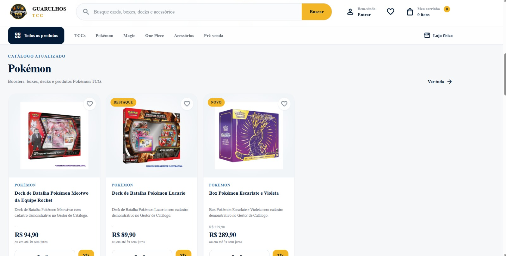
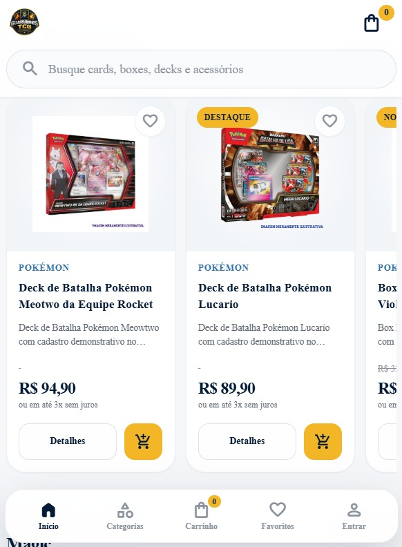
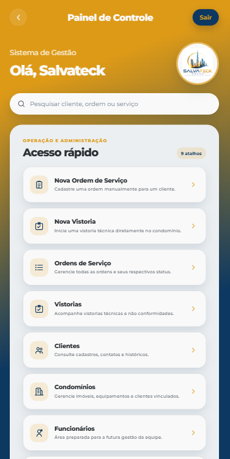
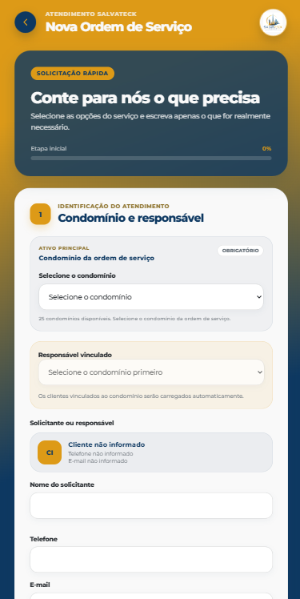
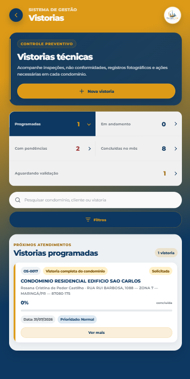
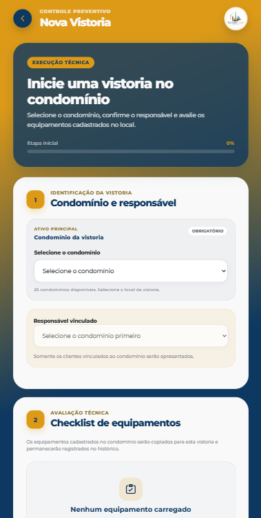
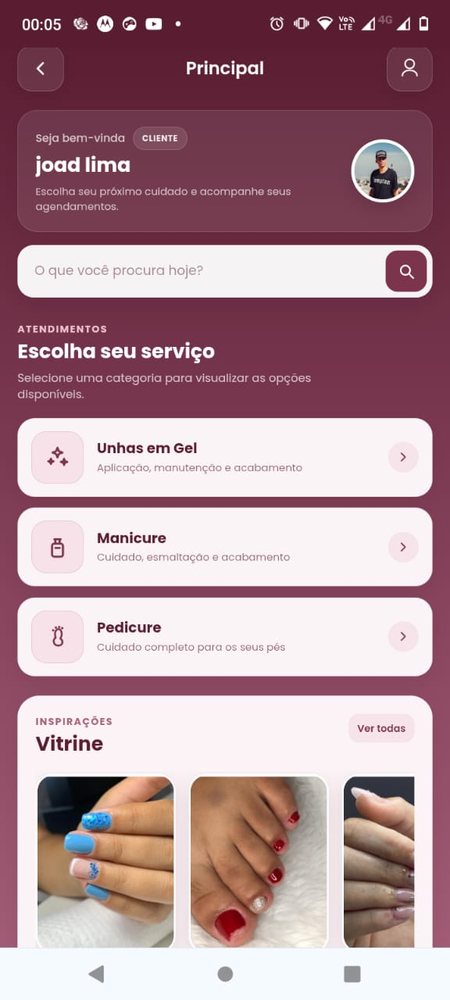
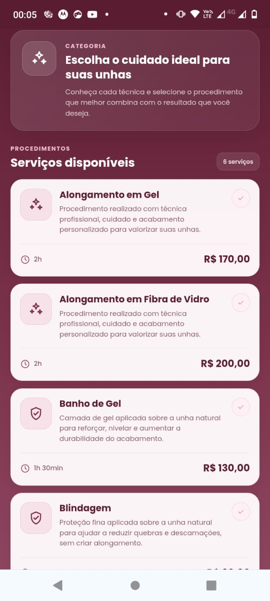
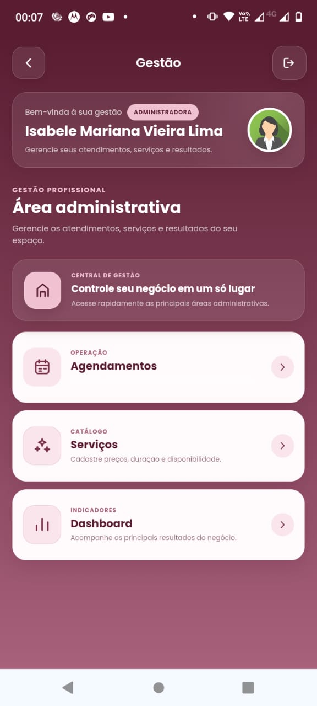
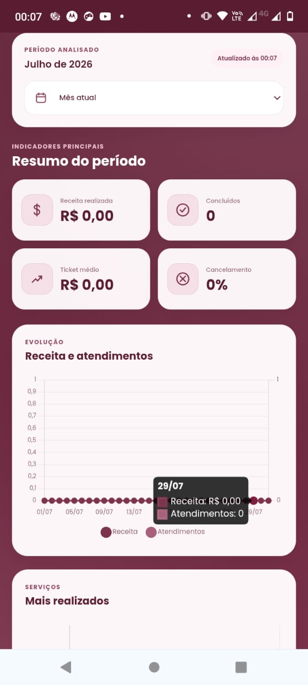

Landing pages
Páginas focadas em apresentar uma oferta, gerar contatos e transformar acessos em oportunidades comerciais.
Joad Lima da Silva cria sites, aplicativos e sistemas personalizados para empresas e profissionais que desejam apresentar seus serviços com credibilidade e conquistar novas oportunidades de negócio.
Seu negócio merece mais do que apenas estar na internet. Ele precisa ser encontrado, lembrado e escolhido.


Antes mesmo de entrar em contato, o cliente já está formando uma opinião sobre o seu negócio.
A aparência, a organização e a facilidade de navegar pelo seu site podem transmitir profissionalismo e confiança — ou fazer com que uma grande oportunidade seja perdida.
Criamos uma presença digital autêntica, estratégica e desenvolvida especialmente para conectar sua empresa com o público certo.
Descubra o site ideal para o seu negócioCada projeto é desenvolvido de acordo com seus objetivos, seu público e a experiência que você deseja entregar aos seus clientes.
Páginas focadas em apresentar uma oferta, gerar contatos e transformar acessos em oportunidades comerciais.
Uma presença digital completa para apresentar sua empresa, serviços, diferenciais e canais de atendimento.
Estruturas organizadas para divulgar produtos, facilitar compras e fortalecer sua operação no ambiente digital.
Ferramentas de gestão criadas para organizar processos, clientes, serviços, pedidos e informações importantes.
Seu site apresenta seu negócio mesmo quando você não está disponível.
Reforça a confiança antes mesmo do primeiro contato.
Mostra seus serviços e diferenciais de forma clara e estratégica.
Conduz o visitante até o orçamento, WhatsApp ou próxima ação.
Um processo organizado para transformar sua ideia em uma solução profissional, responsiva e pronta para apresentar sua empresa.
Conhecemos seu negócio, seus objetivos e o público que deseja alcançar.
Definimos estrutura, conteúdo, identidade visual e caminhos de conversão.
Desenvolvemos as telas com atenção à experiência, leitura e responsividade.
Realizamos os ajustes finais e colocamos sua nova presença digital no ar.
Espaço preparado para apresentar sites, aplicativos, sistemas de gestão e projetos personalizados.




Sistema personalizado para organizar clientes, condomínios, ordens de serviço, vistorias e rotinas administrativas.




Aplicativo personalizado para apresentar serviços, realizar agendamentos e facilitar a gestão da agenda e dos atendimentos.
Vamos criar um site que represente a qualidade do seu trabalho e facilite o caminho entre sua empresa e novas oportunidades.
Atendimento para projetos de sites, sistemas e soluções digitais.